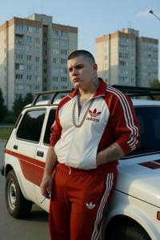
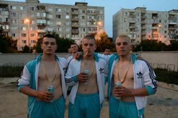

Седмаки
{kind=link}

Седмаки (букв. «седьмовские», по Седьмому округу Вроновицы; ед. ч. муж. — седмак, жен. — седмайка) — низовая городская молодёжная субкультура Бывшей Верхней Паннонии. По типажу её можно сравнить с британскими чавами, русскими гопниками и сербскими дизелашами, но в городской жизни она укоренена куда глубже, чем любой из аналогов, — особенно в столице Вроновице.
У этой субкультуры есть згурская и деглянская ветви. Седмаками называют себя только дегляне — згурцы считают это слово оскорблением, намекающим на деглянский юг, и называют себя иначе: kto xody po rextu, «кто ходит по рехту», или короче — рехтовыми, «соблюдающими рехт». Несмотря на разницу самоназваний, кодекс поведения у обеих ветвей один и тот же.
Происхождение
Субкультура зародилась в 1980-х годах в Седьмом округе Вроновицы — Западном Соцкостуре. Восьмиэтажные «гоубкины шкафы» (Gowbczi szatniki), построенные в рамках соцкостурской жилищной программы, заселяли в основном строительными, заводскими и транспортными рабочими, набранными из деревни. В этой среде росла циничная, оторванная от корней молодёжь, самоутверждавшаяся через демонстративную крутизну и хулиганское поведение.
В 1990 году, сразу после падения коммунистического режима, субкультура резко пошла в рост и в полной мере проявила себя в массовых уличных беспорядках тех лет. К 1992 году она сошла на нет: згуро-деглянский конфликт к тому времени перерос из погромов и стычек квартал на квартал в полномасштабную войну организованных армий, и неструктурированным уличным группам просто не осталось места на этом новом уровне насилия. Одни седмаки подались в профессиональную преступность, другие — в парамилитарные формирования; чёткую границу между ними провести было непросто. Уцелевшие згурские седмаки вместе с другими згурцами ушли на север после того, как дегляне закрепились в южной зоне, и их появление заметно изменило атмосферу Третьего и Четвёртого округов. На протяжении 1990-х и в начале 2000-х улицы контролировали спремники — военизированная националистическая субкультура, чья армейская организация как нельзя лучше подходила для того времени. После стабилизации конфликта и ослабления напряжённости седмаки возродились, и с тех пор удерживают улицу за собой.
Внешний вид
{kind=link}

Внешность седмака строго стандартизирована: бритая или коротко стриженная голова; накачанное и густо татуированное тело; спортивная одежда поддельных брендов в национальных цветах — красно-белая у згурцев, сине-белая у деглян; золотые цепи на шее — неизменно фальшивые. Облик седмайки столь же узнаваем: обтягивающая откровенная одежда, обильный макияж, кричащие украшения; по стереотипу, это крашеная блондинка с отросшими корнями. Соответствие канону поддерживается давлением сверстников, а любое отклонение от него берётся на заметку.
{kind=link}
Татуировки указывают на принадлежность к общине, территориальные зоны контроля и место в иерархии. Заодно они служат главным основанием для недопуска в Нейтральную зону: полиция ООН систематически не впускает туда людей с заметными татуировками, и на практике это не позволяет деглянским и згурским седмакам столкнуться друг с другом, поскольку через Нейтральную зону проходит единственный путь сообщения между двумя зонами.
Образ жизни
{kind=link}
Образ жизни седмаков прямо противоположен идеалу спремников. Спремники аскетичны — седмаки пьют, курят и гуляют допоздна. Спремники коллективно соблюдают военную дисциплину — седмаки подчиняются кодексу рехта, который регулирует поведение, но безо всякой командной структуры.
Музыка занимает центральное место в жизни субкультуры. Господствующий музыкальный жанр — ФУПкор: в нём паннонские фолк-мотивы сочетаются с электронным продакшеном, кричащим вокалом и басами, рассчитанными на автомобильную акустику. Его принято включать на такую громкость, чтобы слышали все соседние улицы, хотят они того или нет.
Стандартный автомобиль седмака — подержанная «Лада» или «Нива»: её ценят за дешевизну, славянское происхождение и пригодность под любой тюнинг. Характерные черты: непропорционально мощная акустическая система, кузов, перекрашенный в национальные цвета, доработанная подвеска и фары, рассчитанные не столько на освещение дороги, сколько на собственную заметность. Обладание достойно оснащённой машиной — главный маркер статуса, а для лидера местной группировки — прямая социальная необходимость.
Жизнь общины проходит на виду у всех: на постоянных уличных точках сбора, определённых углах, на тротуарах перед ларьками. Вечерние посиделки не имеют назначенных сроков. Социальный статус поддерживается только постоянным физическим присутствием.
Женщины не считаются полноправными членами общины седмаков. Войти в группу женщина может только в качестве подруги седмака — другого пути нет. Внутри общины к ней относятся как к собственности партнёра: она не имеет голоса в общих делах и никакого веса в спорах. В самых неблагополучных кварталах для девушек нет другого способа обеспечить себе физическую безопасность, кроме как стать подругой седмака; такова молчаливо признанная норма жизни.
Кодекс рехта
Рехт (от нем. Recht, «право») — кодекс поведения седмаков: бинарная классификация, делящая на две основные категории всех людей, предметы, отношения и поведенческие модели.
Всё на свете суть либо вайс (нем. weiß, «белый») — чистое, дозволенное, уважаемое, — либо шварц (нем. schwarz, «чёрный») — оскверняющее, запретное, грязное. Контакт с чем-то из категории шварц меняет положение человека в общине. Для этого даже есть особый возвратный глагол — sja oszvarcuje («ошварцуется»), описывающий осквернение как внутреннюю перемену состояния, а не как оценку со стороны.
Главная ось вайс–шварц — это система згуро-деглянских цветовых табу, доведённых до предела. Для деглянских седмаков всё згурское — шварц; для згурских рехтовых шварц — всё деглянское. Это вовсе не значит, что физического конфликта избегают: насилие против человека вражеской национальности — вайс или в крайнем случае нейтрально. Оскверняет не контакт сам по себе, а неправильного рода контакт — восхищение, потребление, причастность.
Сфера шварц выходит далеко за пределы этнического раскола. Всё, что связано с неевропейскими расами, тоже шварц, и это, возможно, первичный смысловой пласт, более старый, чем противопоставление цветов футбольных клубов.
Отдельную категорию, частично пересекающуюся со шварц, составляет швуль (нем. жаргон schwul, «гей»). Категория швуль охватывает гомосексуальность и всё, что связано с ЛГБТ-идентичностью, а также распространяется на любое поведение, манеры и внешность, в которых проявляется мягкость, изнеженность, немужественность, ненасилие, законопослушание, толерантность или интеллектуальность. Чтение для своего удовольствия — швуль. Отказ от драки — швуль. Носить костюм с галстуком — швуль. Предпочитать вино ракии — швуль. Это не сатирическое преувеличение: за этой категорией стоит целостное мировоззрение, в котором мужественность определяется через конкретный набор признаков, а всё, что в этот набор не входит, — антипод мужественности.
Вещи и поступки из категории швуль не обязательно шварц — то есть не обязательно оскверняют через контакт, — но они презираемы, отвергаемы и служат поводом для постоянной травли.
С нарушениями рехта разбираются по-разному. За случайные или единичные промахи подвергают избиению и унижению, но можно искупить вину и получить прощение через общепринятые ритуалы. Умышленное и публичное нарушение — не оплошность, а демонстративное презрение к рехту — приравнивается к богохульству. Смертельный исход в таких случаях — обычное дело.
Запреты на бренды
Згуро-деглянские цветовые табу, как и другие ограничения в потребительской культуре, применяются в рамках рехта строже, чем принято среди остального населения. Всё, что связано с цветами врага, — шварц; всё, что культурно или стильно — швуль. И то и другое дисквалифицирует без права обжалования.
Спортивные бренды немецкого или американского происхождения в стандартной расцветке — вайс; вещи в цветах врага — шварц независимо от происхождения бренда. Азиатские производители — всегда шварц, а французские и итальянские — всегда швуль независимо от расцветки.
Технологические бренды классифицируют по цветовым ассоциациям. Facebook и Telegram — шварц для згурских рехтовых из-за сине-белой расцветки; деглянские седмаки по той же логике, но из-за красно-белой расцветки, отвергают Coca-Cola, Nintendo и Colgate.
Автомобили оценивают по стране происхождения: немецкие и американские марки — вайс; азиатские — шварц; французские и итальянские — швуль. Российские марки — пограничный случай: с одной стороны, они достаточно восточные, чтобы затруднить классификацию, с другой — настолько доступные по цене, что рехт делает послабление, — этим и объясняется, почему в субкультуре так много российских машин.
Отношения со спремниками
На практике главный враг седмака — не седмак вражеской национальности (столкновения с ними почти исключены из-за ООНовской политики недопуска татуированных людей в Нейтральную зону), а спремник своей же национальности. Там, где пересекаются обе субкультуры, спремники реагируют на характерное поведение седмаков без предупреждения и сразу с применением силы. Седмаки отвечают тем же.
Почти по всем критериям рехта спремники — швуль: они терпимы к гомосексуальности, уважают женщин, не пьют, не курят, подчиняются организационной иерархии и всерьёз относятся к идеологии. То, что типичный, казалось бы, швуль вполне способен отправить седмака в больницу, — проблема, трудно разрешимая в рамках рехтового мировоззрения.
Уличные столкновения между двумя группами — обычное дело, и почти всегда оканчиваются драками. Спремники берут дисциплиной и трезвостью, седмаки — численным перевесом.
Отношения с гражданскими
Гражданское население в основном боится и ненавидит седмаков: они попросту суть прямая физическая угроза. Но именно это и привлекает к ним молодёжь из низов. Более того, в самых неблагополучных кварталах Седьмого и Пятого округов принадлежность к общине седмаков — не столько стиль жизни, сколько вопрос выживания. Молодой человек, не входящий ни в одну группировку, становится объектом травли для всех.
Примерно к двадцати пяти годам седмаки обычно либо нормализуются, либо уходят в профессиональную преступность. Нормализация означает работу, семью, сниженную уличную активность — но не смену ценностей. Бывшие седмаки по-прежнему следуют рехту в потребительском выборе, в отношении к другой национальности, в определении вещей как швуль и в границах терпимости к поведению окружающих. Став свидетелями насилия, они воспринимают его как норму и не доносят о нём. Своих детей они отваживают от всего, что может сойти за швуль: чтения сверх практической необходимости, стремления к высшему образованию, ненасильственного разрешения конфликтов, общения в этнически смешанных компаниях. На выборах они — если вообще голосуют — поддерживают партии, которые разделяют эти же ценности. Субкультура воспроизводит себя не столько через активную вербовку, сколько через семьи собственных ветеранов.
Категории: Преступность, Культура, Повседневная жизнь, Субкультуры